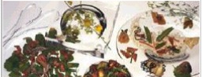
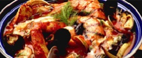
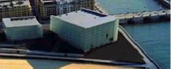
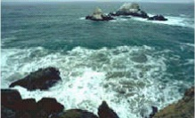

| Gastronomia | Restaurante |  |
| Sidreria y asadores | ||
| Bodegas de vinos y txalcoli |  | |
| Productos tipicos | ||
| Escuelas de hostelería | ||
| Cultura | archivos y bibliotecas |  |
| museos | ||
| Palacios | ||
| ferias de museos | ||
| Cultura | Entretenimietos y diversión |  |
| Ocio cultural | ||
| Excursiones y deportes |